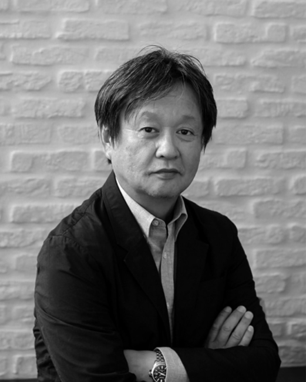
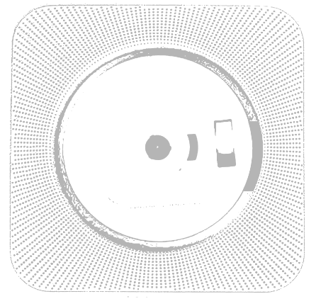

Naoto Fukasawa / 나오토 후카사와
1956년 야마나시 현 출생. 1980년 타마 미술 대학 제품 디자인학과를 졸업. 같은 해 Seiko Epson에 입사하여 고급 개발 디자인을 담당했습니다. 1989 년에 그는 미국으로 이주하여 ID Two (현재 IDEO 샌프란시스코)에 합류했습니다. 실리콘 밸리 산업을 중심으로 7 년 동안 기술을 연마 한 그는 1996 년 일본으로 돌아왔습니다. 그는 IDEO의 도쿄 사무소를 설립하고 이끌며 회사의 일본 디자인 컨설턴트 기반을 만들었습니다. 2003년 독립하여 NAOTO FUKASAWA DESIGN을 설립했습니다.
현재 Fukasawa는 이탈리아, 독일, 미국, 스위스, 스페인, 중국, 한국, 태국, 대만, 싱가포르, 프랑스, 포르투갈, 스웨덴 및 핀란드에서 전 세계의 다양한 주요 브랜드를 디자인하고 현지 일본인을위한 컨설팅 및 디자인을 설계하고 있습니다. 회사. 그의 디자인은 정밀 전자 장비에서 가구, 인테리어 공간 및 건축에 이르기까지 다양한 분야에 걸쳐 있습니다.
10
Fukasawa는 사람들의 희망과 기대를 구현하는 조용한 힘이 깃든 디자인과 디자인 철학으로 잘 알려져 있습니다. “행동에 녹아 드는 디자인”,“의식의 중심”,“정상 성”,“개요”,“원형”과 같은 용어를 사용하여 전달하면서 그는 이러한 철학을 자신의 디자인에 계속 적용하고 있습니다.
Fukasawa는 디자인의 원동력이 사람들의 무의식적 인 행동에서 발견된다고 판단하고 이것을 "Without Thought"라고 명명했습니다. 그는 1999 년부터 매년 같은 이름의 워크숍을 개최했으며 이러한 워크숍의 결실을 책 형식으로 계속 발표하고 있습니다.
후카 사와는 일본 민예관의 큐레이터입니다. 그는 타마 미술 대학 통합 디자인학과 교수입니다. 그는 21_21 Design Sight의 디렉터 중 한 명입니다. 그는 또한 Muji의 디자인 자문위원회에 속해 있으며 Maruni의 아트 디렉터입니다. 그는 Nikkei Shimbun의 Superior Products and Services Award의 심사 위원이며 Mainichi Design Award의 심사 위원입니다. 2006 년에는 Jasper Morrison과 함께“Super Normal”을 설립했습니다. 2010년부터 2014년까지 Good Design Award 위원장을 역임했습니다. 2012년 Braun Prize 심사 위원을 역임했습니다. 2017년에는 Loewe Craft Prize 심사 위원이되었습니다. 그는 Royal Designer for Industry (Royal Society of Arts)라는 칭호를 받았습니다. 2018년 이사 무 노구치 상을 수상했습니다.
